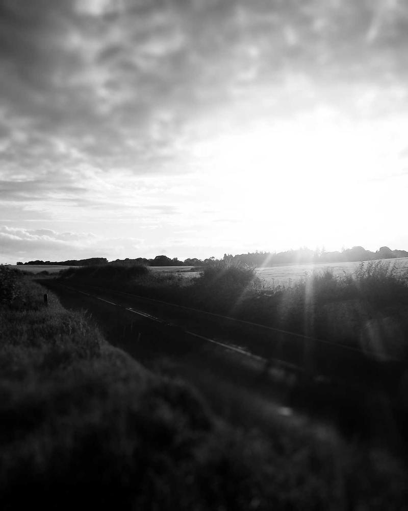

01

Available worldwide
Selected work
精选作品
About me
好奇心，是我
最重要的创作工具。
毕业于上海戏剧学院广播电视编导专业。过去五年，我在纪录片、品牌叙事与音频节目之间辗转。
我相信，最动人的故事不一定宏大，而是藏在一个人的眼神、一段沉默或一段偶然的对白里。

Selected work
About me
毕业于上海戏剧学院广播电视编导专业。过去五年，我在纪录片、品牌叙事与音频节目之间辗转。
我相信，最动人的故事不一定宏大，而是藏在一个人的眼神、一段沉默或一段偶然的对白里。